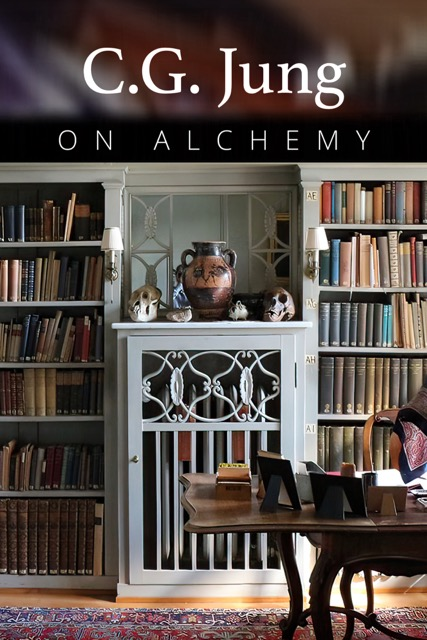

C. G. Jung on Alchemy
Mind-blowing documentary series on Carl Gustav Jung and alchemy by award-winning filmmakers Sara Ferro and Chris Weil. Five years of meticulous work and research, featuring exclusive footage of rare books and manuscripts filmed at the House of C. G. Jung and Eranos. Five years of meticulous work and research, featuring exclusive footage of rare books and manuscripts filmed at the House of C. G. Jung and Eranos. Five years of meticulous work and research, featuring exclusive footage of rare books and manuscripts filmed at the House of C. G. Jung and Eranos. Five years of meticulous work and research, featuring exclusive footage of rare books and manuscripts filmed at the House of C. G. Jung and Eranos. Five years of meticulous work and research, featuring exclusive footage of rare books and manuscripts filmed at the House of C. G. Jung and Eranos.


Explore C. G. Jung’s private collection and discover the secrets of alchemy and psychology.